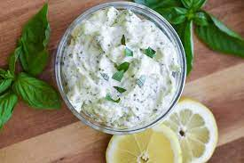

The perfect summertime sandwich, dipping, drinking? sauce is only 3 minutes of easy prep away. This sauce is perfect for any sandwhich see Vegan Bacon recipe for the best Bacon Avocado Tomato sandwhich ever and is even an amazing dipping sauce for fries and tater tots. So go head give it a try!